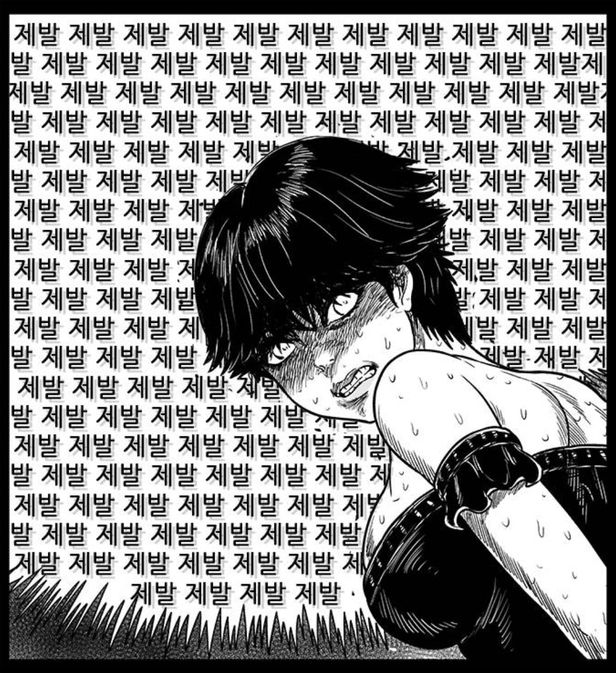

Recent issue
가장 최근 뜨겁게 논란의 중심이 된 이슈는 '웹툰 선정성'논란이다.

웹툰 선정성 논란
YTN 기사 보도 中
최근 논란이 된 네이버 웹툰의 '헬퍼2 : 킬베로스' 입니다. 미성년자를 성적으로 대상화하거나 성폭력과 성 착취 장면이 적나라하게 묘사돼 있습니다.
특히 노인 여성 캐릭터에게 약물 투입하고 고문하는 장면은 큰 논란을 빚었습니다. 18세 이상 등급제한이 있지만, 성인이 보기에도 선정성과 유해성이 도를 넘었다는 비판이 제기되며 항의가 빗발쳤습니다.
웹툰 내용을 규탄하는 트윗이 3만5천 건 이상 게시되고 해시태그 운동도 벌어졌습니다.
[정승환 / 고양시 정발산동 : 아무래도 청소년들이 모방할 수 있는 위험이 있어서 웹툰을 유통하는 플랫폼이나 작가들이 선을 지켜줬으면 하는 바람입니다.] 기안84의 '복학왕' 역시 여성과 장애인 혐오표현으로 수차례 논란이 됐습니다. 웹툰 표현의 문제가 반복되는 것은 마땅한 규제책이 없기 때문입니다. 방송통신심의위원회가 한국 만화가협회 웹툰 자율규제위원회에 규제를 맡겨왔지만, 위원회는 법적으로 아무런 권한이 없습니다. 개선할 방법은 오로지 웹툰을 연재하는 플랫폼 자율에 맡겨진 겁니다.
[이희영 팀장 / 방송통신심의위원회 : 창작물이라는 특성이 있기 때문에 조금 더 효과적이고 효율적인 청소년 보호를 위해서 자율규제가 훨씬 더 효과적이라는 판단 아래 한국 만화가협회와 협약을 한 거죠.] '헬퍼2'를 게재한 웹툰 작가는 연재를 중단하고 사과문을 올렸습니다. 네이버 웹툰도 교육을 강화하고 보완책도 마련해 조만간 공개하겠다고 밝혔습니다. 전문가들은 웹툰이 연간 시장 규모 1조 원대로 대중문화에 끼치는 영향력이 커진 만큼 작가들의 도덕적 책임감이 뒤따라야 한다고 지적합니다.
[김정영 / 청강문화산업대 교수 : 플랫폼에서 이것을 제재하지 않는 이유는 결국 트래픽 발생하는 데 웹툰이 가장 큰 역할을 하고 있거든요. 자연스럽게 손을 안 대는 쪽으로 흘러가는 거죠. 이제는 (작가가) 공인으로서 지켜야 할 도덕관념을 터득해야 하는 거죠.] 하지만 창작의 영역을 보장해주면서 어디까지 표현의 자유를 허용해야 할지 애매한 부분도 있어 논란은 계속되고 있습니다.